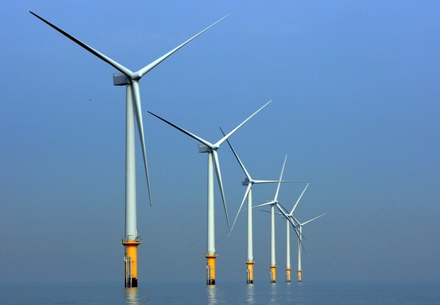
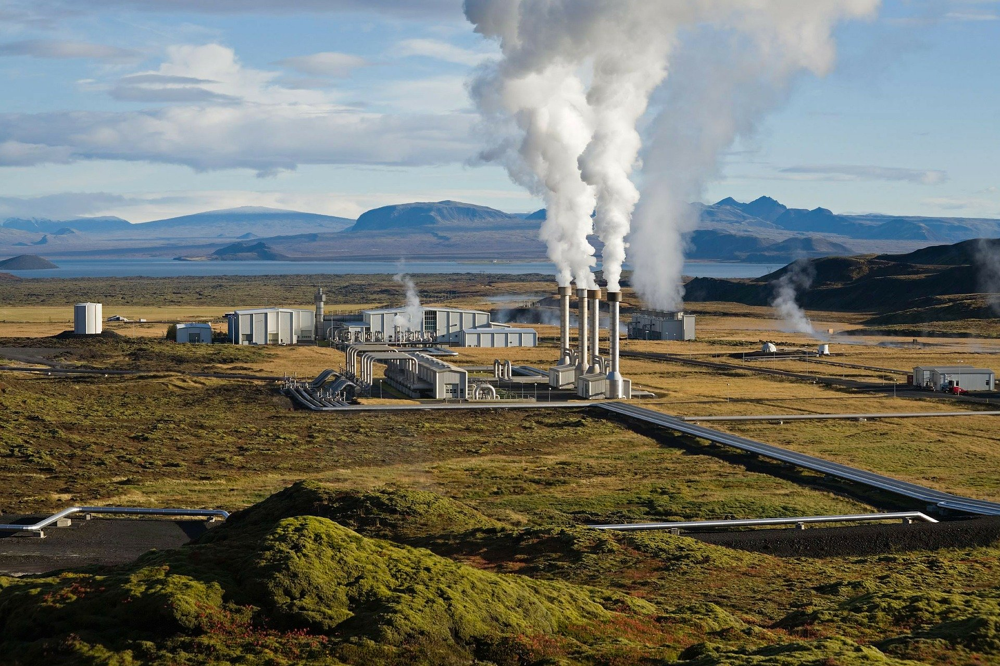
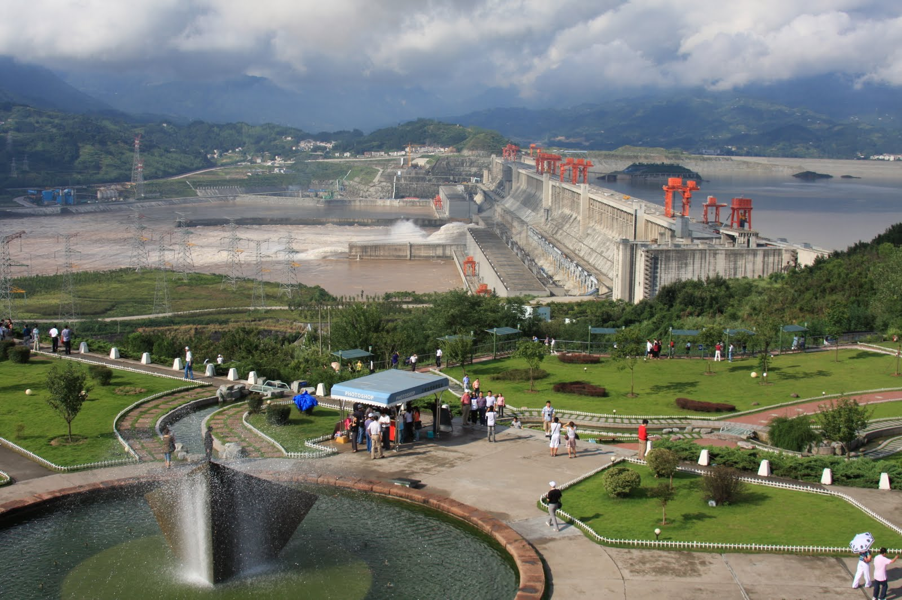
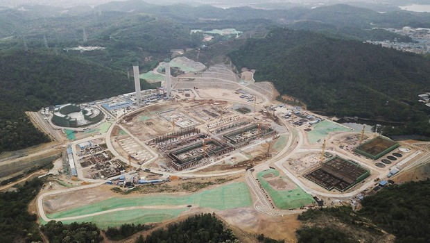
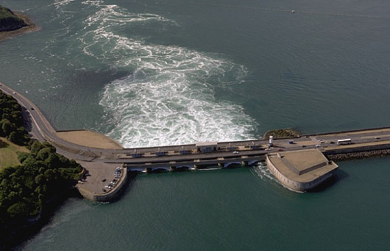

Conforme o vídeo mostra, estamos em constante aumento da dependência por energia elétrica. O problema é que haverá um momento em que as fontes de energia não renováveis não serão mais capaz de suprir a alta demanda, já que nelas são utilizados recursos que são: altamente prejudiciais à nossa saúde, em alguns casos causam a morte imediata; e finitos, ou seja, podem acabar.
Já as energias renováveis são infinitas, sendo teoricamente capazes de acompanhar o crescimento das novas tecnologias, tanto industrialmente, quanto residencialmente. Mas como nem tudo é perfeito, existem alguns problemas referente às energia renováveis, como a localização geográfica e a alta variação climática.
Percebe-se então, a importância da existência de vários tipos de energia (como mecânica, térmica, sonora, etc), para diversificar a geração de energia elétrica sem sobrecarregar uma única forma e possibilitando a implementação da que melhor se adaptar com as características presentes no ambiente. Além de abrir espaço para analisarmos nosso próprio consumo exagerado de energia, a fim transformá-lo em um consumo consciente.
Metas
1° Meta
Até 2030, assegurar o acesso universal, confiável, moderno e a preços acessíveis a serviços de energia.
2° Meta
Até 2030, aumentar substancialmente a participação de energias renováveis na matriz energética global
3° Meta
Até 2030, dobrar a taxa global de melhoria da eficiência energética
4° Meta
Até 2030, reforçar a cooperação internacional para facilitar o acesso a pesquisa e tecnologias de energia limpa, incluindo energias renováveis, eficiência energética e tecnologias de combustíveis fósseis avançadas e mais limpas, e promover o investimento em infraestrutura de energia e em tecnologias de energia limpa
5° Meta
Até 2030, expandir a infraestrutura e modernizar a tecnologia para o fornecimento de serviços de energia modernos e sustentáveis para todos nos países em desenvolvimento, particularmente nos países menos desenvolvidos, nos pequenos Estados insulares em desenvolvimento e nos países em desenvolvimento sem litoral, de acordo com seus respectivos programas de apoio
Energia Elétrica
Eólica
A Energia Eólica é proveniente da força do vento. É utilizada pelo homem desde a antiguidade, principalmente nas embarcações e moinhos. Atualmente, embora pouco aproveitada, é considerada muito importante, já que se trata de uma fonte de energia limpa (não gera poluição e não agride o meio ambiente).
Como é gerada:
Grandes turbinas (aerogeradores), em formato de cata-vento, são colocadas em locais abertos e com boa quantidade de vento. Através de um gerador, o movimento destas turbinas faz com que a energia elétrica seja produzida.
Vantagens:
Os parques eólicos podem ser utilizados também para outros meios, como a agricultura e a criação de gado. E em comparação com as fontes de energia tradicionais, se mostra uma das mais baratas, visto que não requer uma manutenção frequente, uma vez que sua revisão é semestral e em menos de seis meses o aerogerador recupera a energia que foi gasta para ser fabricado.
Desvantagens:
Os parques eólicos impactam negativamente nos aspectos: visual, devido aos aerogeradores e sonoro, pois o vento atinge as pás produzindo um ruído constante de aproximadamente 43 decibéis, fazendo com que seja necessário que as habitações mais próximas estejam a no mínimo 200 metros de distância. Além de afetar o comportamento habitual de migração das aves.
Solar
A Energia Solar é proveniente do Sol (energia térmica e luminosa), captada por painéis solares e transformada em energia elétrica ou mecânica. É utilizada, principalmente em residências, para o aquecimento da água.
Como é gerada:
Os painéis solares possuem placas fotovoltaicas que são feitas de silício, um semicondutor que apresenta um elétron solto na camada de valência. Quando os fótons da luz incidem sobre este elétron, ele se agita, passando a se deslocar pelo painel e seu movimento acaba produzindo energia.
Vantagens:
As centrais necessitam de manutenção mínima e os painéis solares são cada dia mais potentes, o que faz com que seu custo reduza com o tempo. Além de ser uma excelente opção para lugares de difícil acesso, pois sua instalação em pequena escala não requer enormes investimentos em linhas de transmissão e em países tropicais, como o Brasil, sua utilização é viável em praticamente todo o território.
Desvantagens:
Por depender exclusivamente da luz do Sol, durante a noite a produção de energia é inexistente e pode ocorrer variação na quantidade produzida conforme: a situação climática, locais com frequente cobertura de nuvens tendem a ter variações diárias de acordo com o grau de nebulosidade; e a localização, lugares com latitudes médias e altas, sofrem quedas bruscas durante os meses de inverno devido à menor disponibilidade de luz solar. E ainda, os painéis solares têm um rendimento de apenas 25%.
Hidráulica
A Energia Hidráulica, também conhecida como Energia Hídrica ou Hidrelétrica, é obtida através do movimento das correntes de água em rios, mares ou quedas d’água. É considerada uma fonte de energia renovável e limpa.
Como é gerada:
O deslocamento das correntes aquáticas produz energia potencial e cinética, que movimenta as turbinas existentes nas usinas hidrelétricas transformando-as em eletricidade.
Vantagens:
As usinas atuais são automatizadas, o que torna seu custo operacional baixo e como não há uso de combustíveis fósseis (gasolina, diesel) ou gás, consequentemente não há influência do aumento no preço destes ao preço da energia elétrica para o consumidor final. E a água represada pode, dependendo do projeto, ser usada para irrigação de plantações nas proximidades da usina.
Desvantagens:
A construção de represas pode provocar um grande impacto ambiental em regiões de mata ou floresta e a alteração do fluxo de água que sai das barragens, afeta a vida dos ecossistemas nos rios.
Geotérmica
A Energia Geotérmica, também conhecida como Geotermal, é gerada através do calor proveniente do interior da Terra.
Como é gerada:
A usina geotérmica capta a energia térmica derivada do calor da lava para aquecer a água, produzindo o vapor responsável por deslocar as hélices das turbinas que geram energia elétrica. Normalmente, a mesma água é condensada e depois reutilizada em um novo processo.
Vantagens:
As usinas são muito flexíveis e relativamente baratas, já que podem ser facilmente subdivididas para um melhor enquadramento, tanto dentro de uma casa, quanto no interior de um edifício inteiro. Há também a possibilidade de poupar energia (uma média de 75% por casa), uma vez que substitui os sistemas de ar condicionado e aquecedores eléctricos. E em comparação com outras formas de energia mais comuns e mais usadas, esta libera uma menor quantidade de gases poluentes para a atmosfera.
Desvantagens:
Se as usinas não forem instaladas em pequenas zonas onde o calor do interior da Terra vem até a superfície através de vulcões ou outros métodos normais, a perfuração do solo para o seu aproveitamento pode ser bastante dispendiosa. E apesar da sua baixa toxicidade, os anti-gelificantes usados nas zonas mais frias, são poluentes e o seu custo inicial é elevado. Além de que a manutenção da bomba de sucção do calor é relativamente baixa, mas a manutenção dos canos se torna alta devido à corrosão e ao depósito dos minerais.
Biomassa
É a matéria proveniente da decomposição de materiais orgânicos como: biomassa arborícola, sobra de serragem, vegetais e frutas, bagaço de cana e alguns tipos de esgotos. Ela é transformada em energia por meio dos processos de combustão, gaseificação, fermentação ou na produção de substâncias líquidas.
Como é gerada:
A energia térmica, derivada da queima da biomassa, aquece a água, produzindo o vapor responsável por deslocar as hélices das turbinas que geram energia elétrica. Normalmente, a mesma água é condensada e depois reutilizada em um novo processo.
Vantagens:
Baixo custo, fácil armazenamento, alta eficiência energética, emissão de menos gases poluentes e utilização de recursos renováveis.
Desvantagens:
Dificuldade no armazenamento da biomassa sólida, contribuição para formação de chuva ácida (biocombustíveis líquidos), custo elevado na aquisição de equipamentos industriais, grandes impactos ambientais em áreas verdes e destruição da fauna e flora da região.
Mareomotriz
É a energia proveniente do movimento das ondas. Para produzir esse tipo de energia o local deve ter, obrigatoriamente, ondas medianas.
Como é gerada:
Através de alguns pistões que direcionam o movimento mecânico das marés entre as bobinas do alternador, que por sua vez, transforma o movimento linear que é trago até ele em energia elétrica.
Vantagens:
Além de ser uma fonte de energia limpa e renovável, é uma alternativa para países que por diversos motivos não podem gerar energia elétrica de outras formas.
Desvantagens:
A implementação do sistema de uma usina maremotriz ainda é caro em comparação com uma hidrelétrica, fazendo com que o custo/benefício não seja vantajoso para muitos países, principalmente pelo fato de que há necessidade de uma situação geográfica favorável, ou seja, presença de marés no litoral e desnível no solo do oceano. Além do baixo aproveitamento energético e do grande impacto ambiental causado no ecossistema marinho.
Pontos de Energia Elétrica
Veja alguns locais de energia renováveis.

Offshore
O maior parque eólico offshore (em alto-mar) do mundo, que se chama Walney Extension e fica localizado no noroeste da Inglaterra, e foi feito pelo grupo de energia dinamarquês Orsted.
Parque Solar Desert Tenger
Cobre uma área de 1200km², produz um total de 1547MW e é gerido pela National Grid Zhongwei Power Supply Co, que fica localizado na China.

Usina Geotérmica
A primeira central deste tipo data de 1904 e conseguiu por em funcionamento quatro lâmpadas. Nos dias de hoje este tipo de centrais evolui e podem fornecer potências na ordem dos 500 MW instalados.

Hidroelétrica
A usina de Tres-Gargantas, é a central hidroelétrica com a segunda maior barragem e represa do mundo, construída no Rio Yang-tsé, o maior da China, e a maior usina hidrelétrica do mundo em energia gerada, com 98,8 milhões de megawatts

Biomassa
Está sendo construída, na China, a maior usina de produção de bioenergia a partir do lixo. A planta fica na cidade de Shenzhen, no sul do país, e tem a capacidade de processar cerca de 5 mil toneladas de resíduos por dia. A previsão é que a usina comece a operar ainda em 2020.
A nova instalação será capaz de transformar em energia um terço do lixo produzido diariamente pela população da região metropolitana de Shenzhen

Mareomotriz
Na França, desde 1966, a central de energia das marés de La Rance tem produzido uma média de 600 gigawatts de eletricidade por ano.
Energia Térmica/Luminosa
Aquecedor Solar
O aquecedor solar é constituído basicamente de um sistemas de placas que captam o calor emitido pela radiação do Sol e transferem para a água, que é levada para um reservatório térmico, onde depois poderá ser usada para um banho, por exemplo.
Vantagens:
O aquecedor solar é viável por se tratar de uma fonte de energia ecologicamente correta, ou seja, não afeta o meio ambiente. O sistema também se revela vantajoso porque tem baixo custo para o usuário, que pode comprar o equipamento completo e arcar com as despesas da instalação sem gastar muito dinheiro.
Desvantagens:
Apesar de ser eficaz em muitos aspectos, o aquecedor solar também possui pontos negativos: nos dias de baixa insolação, ele não esquenta a água do banho o suficiente e o aquecimento fornecido pelo sistema só proporciona calor para os primeiros banhos, limitando a quantidade de água aquecida ao dia.
Iluminação
Seja para iluminar, economizar ou deixar seus ambientes mais bonitos, a luz oferecida pelo Sol deve ser sempre bem aproveitada nos espaços. Não só por uma questão estética, mas também de saúde: os raios solares ajudam na produção de vitamina D, que está em deficiência na maioria das pessoas que vivem nas cidades, acostumadas a passar boa parte do dia em ambientes fechados e iluminados artificialmente.
Vantagens:
Há uma quantidade benéfica de luz natural, a qualidade do ar é maior e o ambiente torna-se mais confortável visualmente e psicologicamente.
Desvantagens:
Pelo vidro não ser um material muito resistente, muitas vezes não pode substituir uma parede ou teto em alguns locais e, principalmente em locais frios, dificulta o controle térmico por aparelho. Além de ter que lidar com a falta de iluminação em dias com pouca luz solar.
Energia renovável X Energia não renovável.
Apesar de todas as vantagens apresentadas, ainda não é possível a implementação total apenas de energias renováveis, porque existem locais onde não há possibilidade de utilização de nenhum dos recursos necessários, já que muitos deles dependem do clima, condição geográfica ou até da posição no globo terrestre. Nesse caso, é necessária a implementação de uma fonte de energia emergencial, que pode ser proveniente de geradores.
Apesar de alguns geradores utilizarem combustíveis fósseis, ainda conseguimos encontrar empresas que preocupam-se com o meio ambiente. Um exemplo da minha região (Sul do Brasil) é a Stark Geradores, referência no mercado de fornecimento de energia elétrica através desses equipamentos.
Começando desde Hoje
Apesar dos Objetivos de Desenvolvimento Sustentável projetarem suas metas para 2030, podemos iniciar agora, já que ao mesmo tempo que a evolução da tecnologia traz um aumento do consumo de energia, também auxilia no desenvolvimento de novas formas de controlar sua economia.
Assim, atualmente temos vários meios de economizar energia elétrica: alguns mais baratos, como os sensores de presença com lâmpadas que só acendem caso captem o movimento de alguém no cômodo; e outros mais caros, como lâmpadas com conexão Wi-fi, que podem ser controladas através de um dispositivo, e a automatização residencial.
Entretanto, este último, atualmente vem ficando mais barato. O vídeo ao lado mostra um projeto feito por mim, em parceria com meu colega Gabriel Sonda, no qual desenvolvemos um sistema de automatização da iluminação dos cômodos, permitindo que ela seja controlada através de qualquer dispositivo que tenha acesso à internet e com um custo mais baixo.
Sobre mim
Nome: Matheus Alan de Souza Dias
Idade:20 anos
Data de Nascimento: 08/07/2000
Sou Estudante de Engenharia Elétrica (Eletrônica, Telecomunicação e Elétrica) na Universidade do Sul de Santa Catarina, formado em Técnico em Manutenção de Aeronaves. Busquei este tema de ODS, pois é um assunto muito próximo da minha faculdade, e além disto em 2014 participei do MUNDO SENAI, com um projeto de energias renováveis, onde comecei a ter mais gosto pela área.
Quando iniciei este curso, tive em mente o que poderia fazer para melhorar sobre este tema, logo me veio em pensamento, a maior arma sempre é o conhecimento, então comecei a colocar minhas ideias na ponta do lápis, e assim obtive como resultado este site.


 matheus.alan.souza@gmail.com
matheus.alan.souza@gmail.com